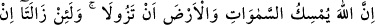
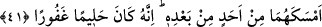
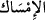
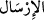
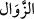
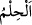

Kir ve pastan arınsın.
41. Şüphesiz Allah gökleri ve yeri, nizamları bozulmasın diye tutuyor. Andolsun ki
onların nizamı eğer bir bozulursa, kendisinden başka hiç kimse onları tutamaz.
Şüphesiz O, halîmdir, çok bağışlayıcıdır.
“Şüphesiz Allah gökleri ve yeri, nizamları bozulmasın diye tutuyor.” Kudretiyle
onları koruyor. “Andolsun ki” kıyâmette olacağı gibi “onların nizamı” yörünge ve
merkezlerinden kayarak “eğer bir bozulursa, kendisinden başka hiç kimse onları
tutamaz.”
Zira “
”, bir şeye asılıp onu korumaktır. “
” kelimesinin yâni salıverip
serbest bırakmanın zıddıdır. “
”, gitmek/kaybolmak demektir. Daha önce sâbit ve
mevcut olup sonradan yok olan her şeye “zâil oldu, zevâl buldu, yok oldu” denilir. Yâni
göklerin ve yerin bulundukları mekan, yörünge ve merkezlerinden kayıp zâil olma
endişesinden dolayı Allah gökleri ve yeri tutup korur, demektir. Zira mümkün olan bir
şeyin varlığını sürdürebilmesi için ona bir muhafız gereklidir. Yahut Allah Teâlâ
göklerin ve yerin kayıp zâil olmalarını engeller. Zira imsak men etmek/engellemek
mânâsına da gelir.
Onları yeniden yörünge ve merkezine oturtmaya kimse muktedir olamaz. “Şüphesiz O,
halîmdir,” kâfirlerin cinayetlerinin muktezâsı olan cezayı peşin olarak vermez. Şirk
sözünün büyüklüğünden dolayı yıkılmayı hak ettikleri halde Allah gökleri ve yeri
tutmuştur. Küfür ve inkârdan dönüp Allah’ın birliğini kabul edeni “çok bağışlayıcıdır.”
Kâfirlerin işledikleri suç ve cinayetlerin gerektirdiği cezâyı peşin olarak hemen
vermez. Zira şirkin günahının büyüklüğünden dolayı gökler ve yer yıkılıp paramparça
olmaya lâyık olmuşlardı. İşte Allah halîm olduğu için onları tutup korumuştur. el-
Müfredât’ta der ki: “
”, nefsin ve tabiatın gazap ve heyecanını kontrol altına
almaktır. Mefâtîh’de der ki: Halîm (yumuşak huylu) ile sabûr (çok sabırlı) arasındaki
fark şudur: Günahkâr ve suçlu kimse halîm iken emin olduğu gibi sabûr halinde iken
cezâ ve azaptan emîn olamaz. Yâni sabûr sıfatında Allah Teâlâ cezâ ve azap vereceğini
bildirmektedir. Halîm ise böyle değildir.
Belki de bu durum kâfirlere göre değil müminlere göre böyledir. Bahru’l-ulûm’da der
ki: Allah Teâlâ’nın halîm oluşu mecâzîdir. Yâni Allah Teâlâ bütün kullarına özellikle
kötülük yapan kimseye yumuşak davranan kişi gibi muâmele yapar. Bu kadar
günahlarına rağmen onları hemen cezalandırmaz.
İmam Gazzâlî, Şerhu’l-esmâ’sında der ki, halîm zat, âsîlerin mâsiyet-lerini